Grids¶
A grid is an aggregated view of all the entity records. Each row of a grid is one record, and columns represent record fields.
Open a Grid Page¶
There are several ways to get to a grid.
Via the main menu.
For instance:
- In the main menu, navigate Customers>Contacts. This will bring to to the Contacts grid.
- In the main menu, navigate Customers>Manage Custom Reports. This will bring to to the Reports grid.
Via the shortcuts menu.
Click the grid link on the entity record view page or create / edit page.
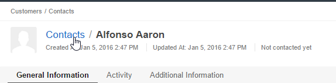
Hint
If you have reached a view page or create / edit page from a grid, and now click link to get back to the grid, it will look identical to when you left it (the same filters and order will still be applied).
Grid Page¶
At the upper-left of the grid page you can see where this page is located in the menu. In the next row you can see a name of the selected grid view. You can open another grid view from the drop-down menu next to the grid view. You rename, delete, etc. the current grid view. For more information about grid views and how to manage them, see Manage Grid Views).
At the upper-right of the grid page, you can see records action buttons. Via them you can perform certain actions with records. The set of these buttons varies depending on which entity grid is opened.
Then follows a filters block. If this block is hidden, but some filters are applied, you will see the filters summary. For more information about filters see Apply a Filter.
In the next row there are grid action buttons that enable you export grid, modify its settings, and, between them, a pager that enables you navigate between data pages.
Refresh the Grid¶
To refresh the grid and get the newest details on the displayed records, click  Refresh on the top right of the grid.
Refresh on the top right of the grid.
Export a Grid¶
To export a grid, click the Export Grid button in the upper-left corner of the grid, and then click CSV or XLXS to export the grid to the file of the corresponding format (available formats may vary).
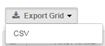Adjust a Grid¶
Note
The default data grid settings define whether to paginate data in grids, how many items to show per page, and what maximum number of pages can be shown. They also define whether to the top of the grid page will be locked so that you will be able to see the page name, data headers, etc. at any moment when you scroll.
Usually these settings are defined by a system administrator for the whole OroCRM/OroCommerce application. Check whether you have access to the personal configuration: in the user menu, look for the My Configuration item. If the access is granted to you, see the Data Grid Settings for how to configure basic data grid settings.
Set Number of Items Per Page¶
You can change the amount of items displayed per page. To do this, click the View Per Page drop-down list on the top right of the grid, and select the required number of items per page.
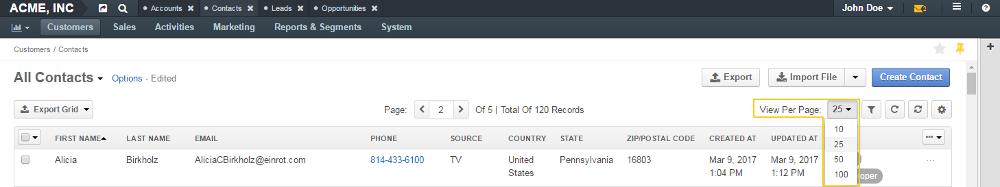Select Columns to Display¶
You can define which columns to show in the grid.
To do this:
Click the Grid Settings icon on the top right of the grid.
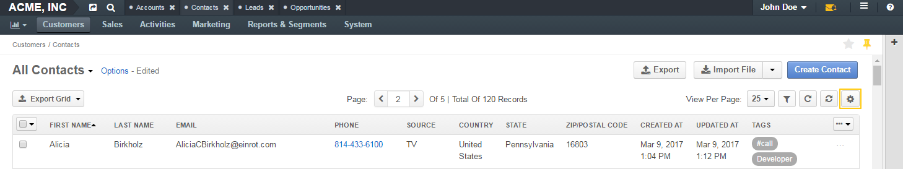To show / hide a column in the grid, in the Grid Settings menu, select / clear the corresponding check box in the Show column.
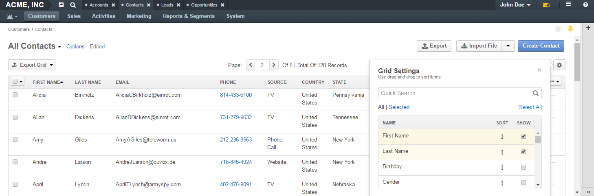Hint
You can use a search field to quickly find the required item.
Important
Some fields that an entity has may be unavailable as columns of the grid. The list of available fields is defined by the system administrator. If you are a system administrator, see the Show on Grid field of the Other Entity Field Properties.
Change Columns Order¶
You can define the order of columns in the grid.
To do this:
Click the Grid Settings icon on the top right of the grid.
In the Grid Settings menu, click on the Sort icon next to name of the column that you want to move, hold the mouse button, and drag the column to the new place.
Hint
You can use a search field to quickly find the required item.
Sort Data¶
By default, data in grid is sorted in ascending order by the first column. You can sort them by any field and in any order.
To sort a field, click the column header. When sorting is ascending, an upward arrow appears next to the column name. When sorting is descending, a downward arrow appears.
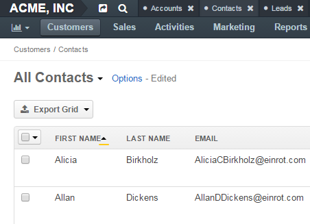Apply Filters¶
You can apply filters to choose specific items to be shown in the grid.
For example, if there are a lot of contacts, they will not all fit on one page. In order to find the required contact in the grid, use the grid filters.
Show / Hide Filters¶
To show / hide filters, click the Filters icon on the top right of the grid. The filters section will appear.
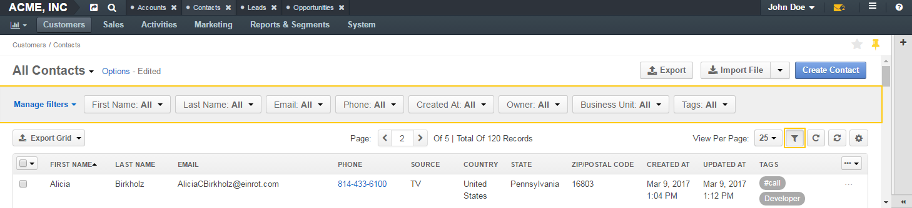By default, filters are usually hidden. When filters are hidden and some of them are currently applied to the data in grid, you will see the short summary of the applied filters on the top of the grid page.
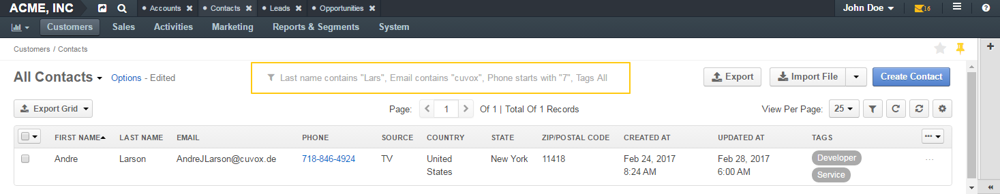Click the summary to show filters.
Select Filters to Display¶
- Click the Filters icon on the top right of the grid to show the filters block.
- On the left side of the filters block, click the Manage Filters link.
- In the list, select check boxes in front of the filters you want to display. You can use a search field at the top of the list to quickly find the required filter.
Important
Records may have more fields than you can use to filter data by. The list of fields by which you can filter data is defined by the system administrator. If you are a system administrator, see the Show Grid Filter field of the Other Entity Field Properties.
Apply a Filter¶
Click the Filters icon on the top right of the grid to show the filters block.
Choose a filter you want to apply and click it. You will see controls that enable you to select desired values.
Enter a filter conditions.
Available controls depend on the field type.
Text fields that can take any value
For text fields that can take any value, you can enter search words (or part of the word) and select from the list in front of it whether values that you select must contain these search phrase at any position or does not contain it at all, must start with it, end with it, etc.
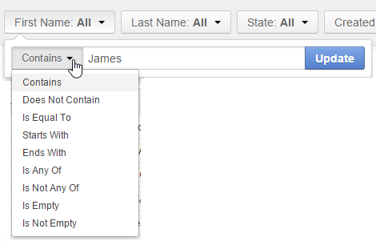For conditions like ‘Is Any Of’ and ‘Is Not Any Of,’ enter search words separated by comma.
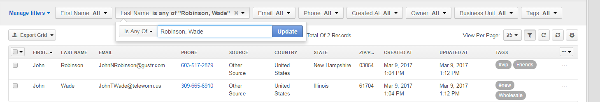Fields that can take limited values
Start typing the required value into the text filed. When you this value appears in the drop-down list, click it to select.
You can click the empty text field to see the list of all available values.
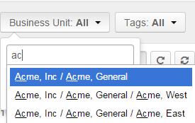Dates and time
Click the date fields to select the date via the calendar menu. Click the time fields to select a time from the list.
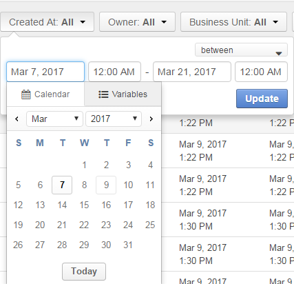In addition to selecting a strict calendar date, you can use variables that enable you to specify relative values, such as ‘today,’ ‘start of the month,’ etc.
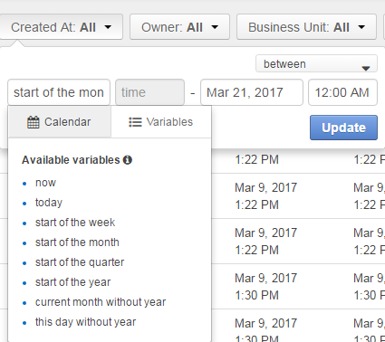Also specify the condition of how to form your desired time range, whether it starts from the day and time that you specified, lays between set dates, etc.
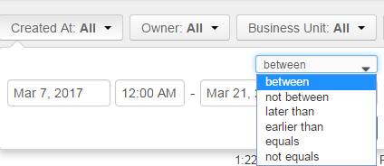Click Update.
Important
If more than one filter are active, only the records that meet requirements of all selected filters are displayed.
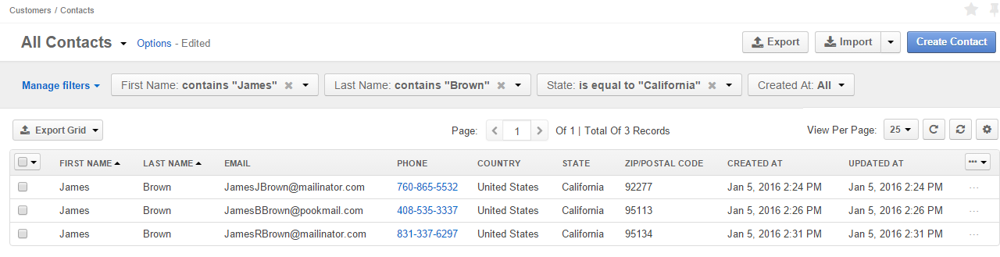Reset a Grid¶
To reset the grid (i.e., clear all the filters applied to the grid), click 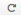 Reset on the top right of the grid.
Manage Grid Views¶
A grid view is a a grid with applied filters or custom ordering. By default, each grid has a grid view called All <Record Name> (e.g. All Accounts or All Calls). This grid view shows unfiltered data. For some entities, additional default grid views exist (e.g. Open Leads for leads, Duplicated Accounts for accounts).
If there is a frequent set of filters and / or ordering that you need to use, save them as a custom grid view. You can have any number of additional grid views. This is very convenient when you are working with customers from different stores, contacts from different states, and so on.
Create a Grid View¶
Adjust the grid. See the Adjust a Grid section for how to do it.
Click the Options link next to the grid view name, an then click Save As.
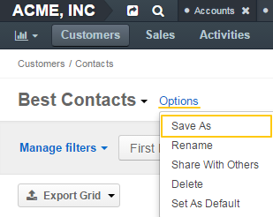In the Grid view dialog box, provide the following information:
Name—Define a name of the new grid view.
Hint
Give your views meaningful names so that you can easily find the required view later.
Set as default—Select this check box to make the new grid view a default one. (The default grid view is what you see when you open a grid page.)
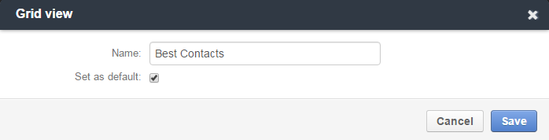Click the Save button.
The view will now be available in the drop-down menu next to the grid name.
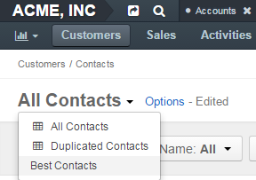Open a Grid View¶
To open a particular grid view, click the arrow next to the current grid view name, and then click the name of the grid view you want to open.
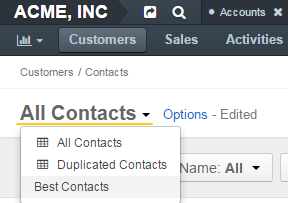Set a Default Grid View¶
The default grid view is what you see when you open a grid page.
- Open a grid view.
- Click the Options link next to the grid view name, and then click Set As Default.
Alternatively, you can set a grid view as default during its creation (see step 3 of the Create a Grid View action description) or renaming (see step 3 of the Rename a Grid View action description).
Rename a Grid View¶
To rename a grid view:
- Open a grid view.
- Click the Options link next to the grid view name, and then click Rename.
In the Grid view dialog box, provide the following information:
Name—Define a new name name for the new grid view.
Set as default—Select this check box to make the new grid view a default one. (The default grid view is what you see when you open a grid page.)
Click the Save button.
Delete a Grid View¶
Warning
You can delete only custom grid views.
To delete a grid view:
- Open a grid view.
- Click the Options link next to the grid view name, and then click Delete.
- In the Delete Confirmation dialog box, click Yes, Delete.
Manage Records¶
Important
The actions that you can perform with records from the grid varies depending on the entity, also your permissions may affect it too.
This section describes the most common actions.
Create a New Records¶
The most common way of creating a new entity record is to do it directly from the grid.
To create a new record, click Create <Entity Name> action button on the top right of the grid page.
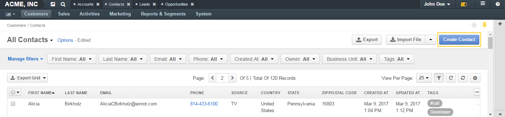View a Record¶
To view a record, find it in the grid, click the ellipsis menu at the right end of the corresponding row, and the click the View icon. The record view page will open.
Note
Sometimes, instead of the ellipsis menu, you will see only the action icons at the end of the record row. This happens when you are enabled to perform only one or two actions with a record, and hiding the corresponding icons under the ellipsis menu will not simplify the interface.
Alternatively, you can click the corresponding row itself (but make sure you do not click the Edit Inline icon).
Edit a Record¶
Inline Editing¶
Important
Inline editing—ability to edit record field values directly from the grid—is available only for the limited set of fields. This set differs for different entities and is not configurable.
Point to the value in the grid that you want to edit. If the Edit Inline icon appears next to it, you can edit this values in this column from the grid.
Click the Edit Inline icon.
Alternatively, click the value itself twice.
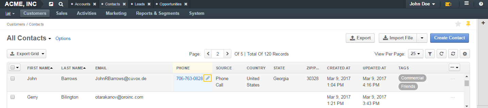Modify the value as required.
Inline editors can be of different types. The simplest inline editor is a plain text field, where you can type the required value.
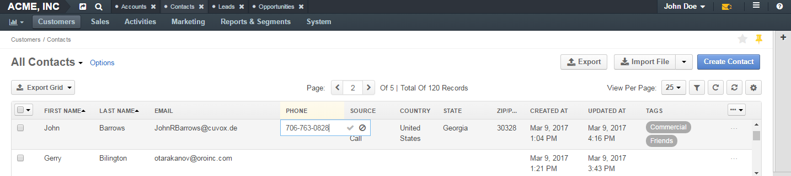If a field can take just certain values, the inline editor will show you a list values to select from.
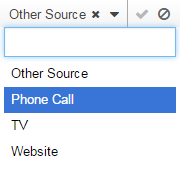Click the Save Changes icon to save a new value.
Or click the Discard Changes icon to return to the old value.
Open the Edit Page¶
To open a record edit page, find the record in the grid, click the ellipsis menu at the right end of the corresponding row, and the click the Edit icon.
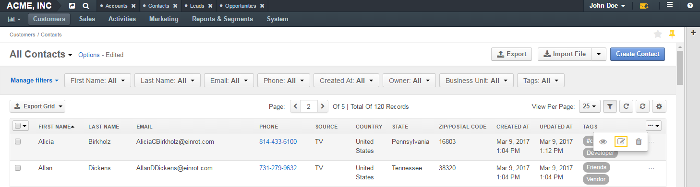Delete a Record¶
Delete a Single Record¶
To delete a record, find the record in the grid, click the ellipsis menu at the right end of the corresponding row, and the click the Delete icon.
Delete Multiple Records¶
To delete several records:
- In the grid, select the check boxes in front of the records you want to delete.
- Click the ellipsis menu at the right end of the grid header row, and the click the Delete icon.
Merge Records¶
Important
Currently, merge can only be done for accounts.
To merge records:
- In the grid, select the check boxes in front of the records you want to merge.
- Click the ellipsis menu at the right end of the grid header row, and the click the Merge icon.